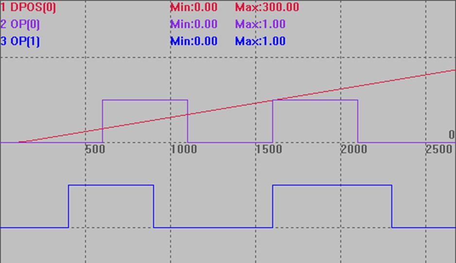

|
类型 |
轴参数 |
|
描述 |
设置HW_PSWITCH2指令实际操作的轴号，缺省-1表示不修改。 用于把没有使用的轴的HW_PSWITCH2缓冲重复利用起来，指向当前运动的主轴,，可以对当前的主轴同时做多个比较。 |
|
语法 |
HW_PS2AXISNUM(axisnum1)=axisnum2 axisnum1：缓冲轴号 axisnum2：实际操作的轴号 |
|
适用控制器 |
4系列170705以后固件版本支持 |
|
例子 |
以下例程测试环境：ZMC432，固件：20170709（仿真器无法运行此指令）。
RAPIDSTOP(2) WAIT IDLE(0) WAIT IDLE(1) BASE(0,1) ATYPE=1,1 UNITS=100,100 SPEED=100,100 ACCEL=500,500 DPOS=0,0 TRIGGER OP(0, OFF) OP(1, OFF)
HW_PS2AXISNUM(1)=0 '使用轴1的缓冲区，比较轴0的位置 VECTOR_MOVED =0 TABLE(0,50,100,150,200) '第一个比较点坐标设置 TABLE(10,30,80,150,220) '第一个比较点坐标设置
HW_PSWITCH2(1, 0, 1, 0, 3,1) '第1个比较 HW_PSWITCH2(1, 1, 1, 10, 13,1) AXIS(1) '第2个比较，使用1轴的比较缓冲，实际比较0轴的位置 MOVE(300) WAITIDLE(0) HW_PS2AXISNUM(1)=-1 '取消 END
 |
|
相关指令 |